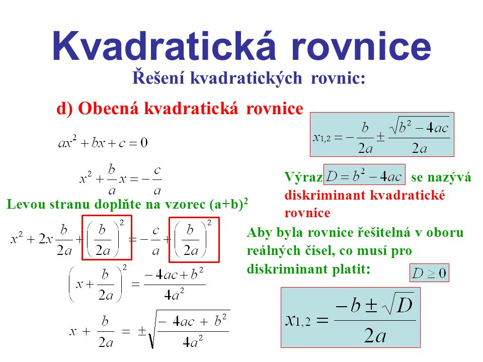

Levá strana rovnice (ax² + bx + c) popisuje parabolu s osou rovnoběžnou s osou y. Pokud je a>0, je parabola otevřená směrem nahoru (má vrchol dole), při a < 0 je otevřená dolů (vrchol je nahoře). Řešení kvadratické rovnice odpovídá hledání průsečíků této paraboly s osou x (pravá strana z rovnice dělá výraz y=0). Podle polohy paraboly mohou nastat tři případy: Parabola leží celá nad (pro a>0) nebo celá pod (pro a<0) osou x. To nastane v případě, že D < 0. Tehdy parabola nemá žádný průsečík s osou x, což znamená, že kvadratická rovnice nemá v reálných číslech řešení. Kořeny rovnice jsou 2 komplexně sdružená komplexní čísla. Vrchol paraboly leží právě na ose x. To nastane v případě, že D=0. Tehdy se parabola osy x dotýká, tzn. má s ní jeden společný bod (právě vrchol paraboly), tzn. kvadratická rovnice má jedno (dvojnásobné) řešení. V ostatních případech osa x parabolu protíná ve dvou bodech. To nastane v případě, že D>0. Tehdy existují dva průsečíky osy x s parabolou, tzn. rovnice má dvě různá řešení.
Každou kvadratickou rovnici lze řešit pomocí výpočtu diskriminantu D. Pro diskriminant platí: D=b^2-4*a*c.
Kvadratické rovnice celkově řešit i více způsoby:
Vietovy vzorce popisují vztah mezi kořeny kvadratické rovnice a při dobrých podmínkách nám pomohou rychle určit kořeny kvadratické rovnice.
Pro výpoče kvadratické rovnice možno použít kalkulačku umístěnou ve spodu této stránky
Pro výpočet klikněte ZDE
